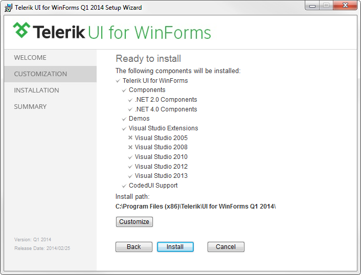

Installing On Your Computer
The Telerik WinForms setup performs the following actions during the installation process:
Copies the needed files and assemblies on your machine
Installs all Telerik WinForms assemblies in the Global Assembly Cache (GAC)
Creates native images for all Telerik UI for WinForms assemblies
Checks the Visual Studio version(s) installed on the machine. We currently support Visual Studio 2005, 2008, 2010, 2012 and 2013 installations
Installs/adds all Telerik WinForms controls in the toolbox of Visual Studio
Installs Telerik UI for WinForms Visual Studio templates
Installs
Telerik UI for WinForms Visual Studio
Extensions
add-onInstalls Telerik UI for WinForms Examples
Installs Telerik UI for WinForms Coded UI support for Visual Studio 2010 and 2012
Please follow the steps below to install Telerik UI for WinForms:
Close all running instances of Visual Studio.
Run the Telerik UI for WinForms setup as Administrator (right-click on the installer and select Run As Administrator).
-
The installer will display the Welcome screen. Click Next to continue.
You can use the Read License Agreement button to display the license agreement. Review the License Agreement carefully
as it contains important information about the tools, the source code, and support. Click OK afterwards, or use the
Print button to print the agreement. Once you are done, select the I agree - Continue
in order to continue. In this step the installer checks the Visual Studio and .NET versions that are installed on the machine in order to prepare the files for installation.
-
You can use the Customize button to choose which features will be installed and the installation path.
 Once done with the installation customization click the Install to start the installation process.
-
The installer will install the controls and display its progress as it does so. You may click Cancel to reverse
the process while this screen is displayed. The installer will display the completion screen when the controls are installed. Select the Launch Examples check box to
launch the examples when the installer is closed. Click Finish to complete the installation.